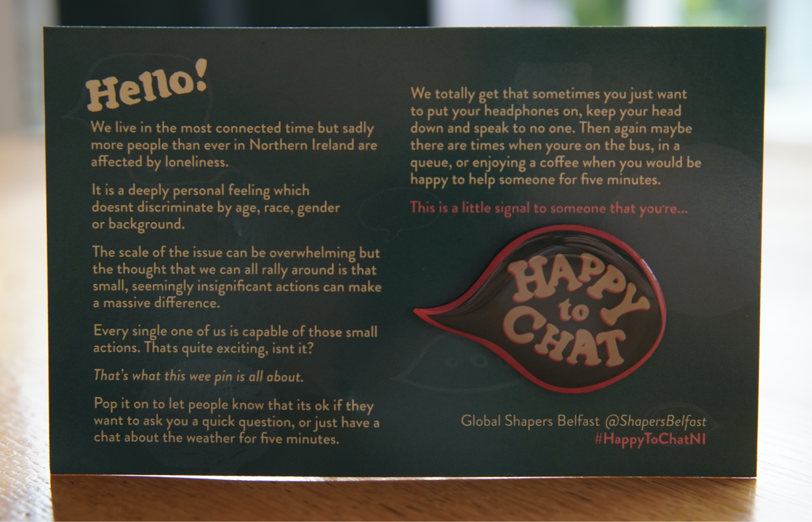

"Happy to Chat" badge


Loneliness in Northern Ireland is currently described as an ‘epidemic’. While that may not come as a surprise (even as we live in the most connected time) the nature of the problem appears to be misunderstood. The general perception is that older people are the most likely group to experience loneliness, however, that does not tell the whole story. People of all ages are reporting feelings of loneliness, especially those going through life transitions like moving, illness, starting a new job, relationship breakdown etc.
Loneliness is very much subjective, it happens when there is a mismatch between the quantity and quality of social relationships we have and those we want. It’s a tricky issue to tackle because it requires all of us to help but the exciting thing is that small actions can make a huge difference.